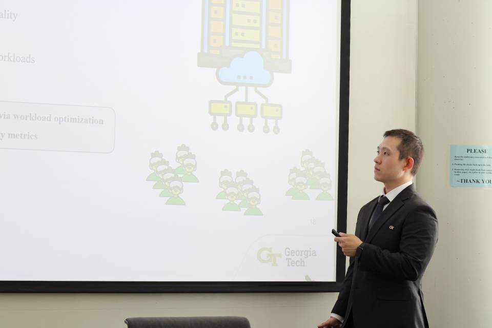

About
I'm a 5th year CS PhD student at Georgia Tech and working with Ada Gavrilovska.
I'm also co-advised with Alexey Tumanov.
My academic trajectory was initially started after my early career for pro gamer, igniting my interest in the intersection of computer science and video game design/development.
They significantly shapes my current research pursuits.
My primary focus lies in constructing infrastructures tailored for interactive multimedia applications, aimed at fostering more immersive user experiences.
Throughout my doctoral journey, I've concentrated on projects within the realm of Extended Reality (XR), encompassing AR, VR, and MR.
From the system perspective, I've delved into optimizing XR workloads, particularly in rendering and perception, seeking out unique opportunities to enhance both user experiences and system resource efficiency.
Additionally, I've spearheaded the development of adaptive systems that systematically leverage these optimizations.
Furthermore, my research extends to addressing challenges faced by mobile users on resource-constrained devices.
I've explored distributed systems for edge computing, aiming to enhance performance in these environments. Additionally, I've contributed to the advancement of efficient compression methods for emerging multimedia and sensory data communication.
My resume is available here.

Publication & Presentation
- FleXR: A System Enabling Flexibly Distributed Extended Reality, Jin Heo, Ketan Bhardwaj, Ada Gavrilovska, The 14th ACM Multimedia Systems Conference (MMSys '23) -- [paper] [project repo]
- FLiCR: A Fast and Lightweight LiDAR Point Cloud Compression Based on Lossy RI, Jin Heo, Christopher Phillips, Ada Gavrilovska, The Seventh ACM/IEEE Symposium on Edge Computing (SEC '22) [paper] [arixv version]
- Poster: Making Edge-assisted LiDAR Perceptions Robust to Lossy Point Cloud Compression, Jin Heo, Gregorie Phillips, Per-Erik Brodin, Ada Gavrilovska, The Seventh ACM/IEEE Symposium on Edge Computing (SEC '22) [paper]
- Poster: Enabling Flexible Edge-assisted XR, Jin Heo, Ketan Bhardwaj, Ada Gavrilovska, The Sixth ACM/IEEE Symposium on Edge Computing (SEC '21) -- Best Poster Award [paper]
- Acceleration Framework for FPGA Implementation of OpenVX Graph Pipelines, Sajjad Taheri, Jin Heo, Payman Behnam, Jeffrey Chen, Alexander Veidenbaum, Alexandru Nicolau, Field-Programmable Custom Computing Machines (FCCM), 2018 IEEE 26th Annual International Symposium on. IEEE, 2018 [paper], [extended version]
Experience
- Research Intern, AT&T Labs, Jun 2023 - Aug 2023
- Graduate Researcher, Ericsson Research, Mar 2021 - Dec 2022
- Research Scholar, SRC Research Scholars Program, Jan 2020 - Aug 2022
- Graduate Research Assistant, Georgia Tech, Aug 2019 - Present
- Undergraduate Research Fellow, UC Irvine, Jul 2017 - Jan 2018
- Undergraduate Research Assistant, Ajou University, Mar 2017 - Jul 2017
- Undergraduate Research Fellow, CSIRO, Dec 2016 - Feb 2017
- IT Specialist, Korean Armed Forces Busan Hospital, Aug 2011 - Nov 2013
Education
- Georgia Tech, Ph.D., Computer Science, Aug 2019 - Present
- Ajou University, B.S., Computer Software and Engineering, Mar 2016 - Aug 2018
- National Institute for Lifelong Education, A.S., Information Processing, Mar 2015 - Feb 2016
- Chungkang College of Cultural Industries, Attened for freshmen, Computer Games and Programming Skills, Mar 2011 -Feb 2015
Some Projects...
- FlexPipe: A framework that enables flexibly distributed pipelines for millisecond-scale and real-time applications [link]
- nvmpi-portable: HW-accelerated Frame Encoding/Decoding Library for NVIDIA Jetson with L4T, jetson-ffmpeg, OpenCV [link]
- AR Tower Defence Game on Magic Leap 1 [link]
- EvoSlash: 3D hack-and-slash zombie killing game [link]
- CCTV with smart recording on a resource-constrained device [link]
- from my undergraduate.. [link]